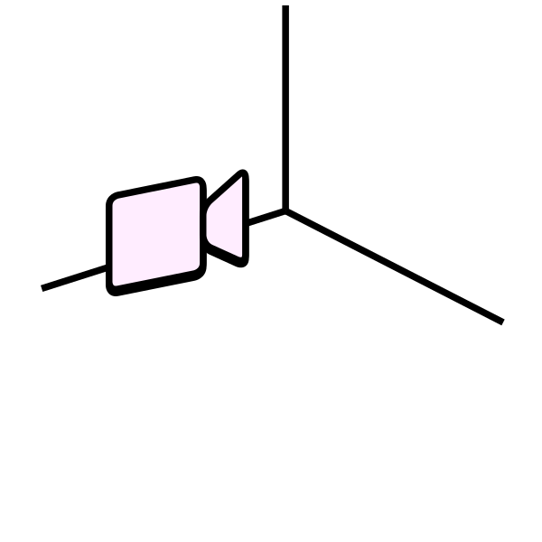

←
AVOIDING THE BRICK
Video
lectures

What values and methodologies do modders share?
1/Computational luxuryIn this video we are going to talk about computational luxury, understood as a feature that marked the early development of the smartphone market.
2/The philosophy of moddersThis video is about the philosophy of the modding movement.
What ideals move groups of developers to release, mostly for free, software for the community?
3/The practice of moddingIn this episode we will introduce the practice of modding: mods, custom ROMs modders attitude.
In which way modders try to regain agency over their interface?
This publication resulted from research conducted
as part of the individual thesis project in the master
department Information Design at
Design Academy Eindhoven, The Netherlands
April 2023
Tutors
Simon Davies
Anna Engelhardt
Marco Ferrari
Silvio Lorusso
Gert Staal
Irene Stracuzzi
Written and designed by Marco Pagan
Press Kit